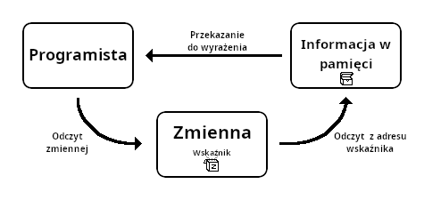
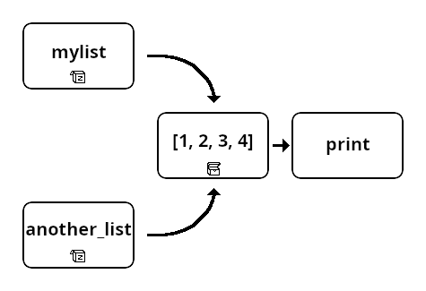

Typy danych II
Omówiliśmy już kilka podstawowych typów danych.Aby umożliwić przechowywanie i pracę z bardziej złożonymi danymi, potrzebna będzie ci również znajomość typów kolekcji.
Służą one do przechowywania wielu wartości jednocześnie.
Spis treści
Lista
W Pythonie nazywana
list.Sama nazwa tego typu danych wskazuje na jego naturę.
Jest to po prostu lista, czy sekwencja, wielu wartości (elementów).
Warto zaznaczyć, że lista może przechowywać wartości różnych typów (np. zarówno
string jak i int) jednocześnie.Zmienną tego typu można utworzyć za pomocą polecenia
list(),
lub umieszczając wartości oddzielone przecinkami wewnątrz nawiasów kwadratowych:
example_list = [0, True, 13, "piętnaście", 19.5] # lista z elementami różnych typów
empty_list = [] # pusta lista
another_empty_list = list() # również pusta lista
Operacje na typach sekwencyjnych
Typy sekwencyjne opisują uporządkowane sekwencje wartości.Należą do nich między innymi lista, tuple oraz string (w końcu string jest sekwencją znaków).
Na danych takich typów można przeprowadzać slicing.
third = example_list[2]
print(third)
13Można je również konkatenować (łączyć) za pomocą operatora
+, oraz powielać za pomocą operatora *.
list1 = [1, 2, 3]
list2 = [4.5, 5.5, 6.5]
print(list1 + list2)
[1, 2, 3, 4.5, 5.5, 6.5]
print(list1 * 3)
[1, 2, 3, 1, 2, 3, 1, 2, 3]Istnieje wiele metod oraz funkcji, których można używać z takimi typami: (naciśnij aby rozwinąć)
-
len(s)- zwraca liczbę elementów w sekwencji, np.len([0,1,2,3,4])=5 -
s.count(x)- zwraca liczbę wystąpień podanego elementu w sekwencji, np.[3,8,1,7,8].count(8)=2 -
s.index(x)Zwraca indeks, (pozycję) pod którym znajduje się podana wartość.
Jeśli taka wartość nie występuje w sekwencji, zwraca błąd.
Jeśli taka wartość występuje kilkukrotnie, zwraca indeks, pod którym występuje po raz pierwszy.
[3,8,1,7,8].index(8)=1 -
min(s)orazmax(s)Zwracają, odpowiednio, najmniejszy oraz największy element w sekwencji.
Zwrócą błąd, jeśli w sekwencji znajdują się dane różnych typów (których nie można łatwo porównać).
min([11, 3.4, 5, 2])=2, ale:max(["a", 12, 4])=TypeError
Możliwe jest też użycie ich na sekwencjach zawierających stringi, wtedy otrzymamy pierwszy lub ostatni element w kolejności alfabetycznej.
min(["basia", "dorota", "Ania", "ania"])="Ania" -
sum(s)- zwraca sumę elementów w sekwencji. Zwróci błąd jeśli sekwencja zwiera nie-numeryczne dane.
Operacje typowe dla listy
Istnieją także metody oraz funkcje wykorzystywane konkretnie z listami.(niemniej, wszystkich powyższych operacji również można z nimi używać)
-
l.append(x)- dodaje elementxna koniec listy. -
l.insert(i, x)- wstawia elementxpod indeksi. -
l.append(x)- dodaje elementxna koniec listy. -
l.remove(x)- usuwa z listy element o wartościx. Jeśli występuje on kilka razy, usuwa tylko pierwszy. -
l.pop()- usuwa, oraz zwraca, ostatni element z listy. -
l.pop(i)- usuwa oraz zwraca element spod indeksui. -
l.clear()- usuwa wszystkie elementy z listy. -
l.copy()- zwraca (płytką) kopię listy. (dla ekspertów, głęboką kopię można utworzyć za pomocą funkcjideepcopy(l)z modułucopy) -
l.sort(reverse=False)Sortuje elementy listy. (naciśnij aby rozwinąć)
Podobnie jak
min()orazmax(), zwróci błąd, jeśli lista zawiera elementy, których nie da się porównywać.
Listy stringów są sortowane alfabetycznie.
Domyślnie sortuje od najmniejszej do największej wartości, jednak można ustawić parametrreversenaTrueaby sortować malejąco.> a = [5, 1, 8, 12] a.sort() b = [5, 1, 8, 12] b.sort(reverse=True) print(a) print(b)[1, 5, 8, 12]
[12, 8, 5, 1] -
sorted(l, reverse=False)- alternatywa dla powyższej metody, zamiast zmieniać listę, zwraca posortowaną kopię.
Tuple
Tak właściwie, to ten typ danych w języku Polskim nazywa się krotką, ale osobiście nie lubię tej nazwy...
W każdym razie, Python używa nazwy
tuple.Typ tuple jest właściwie zupełnie jak lista - tylko niemutowalna, a za to haszowalna.
Niemutowalność (jak w przypadku typu string!) oznacza, że danych tego typu nie da się modyfikować.
Natomiast haszowalność w praktyce oznacza tyle, że tuple może być kluczem w słowniku... ale o słownikach powiem później.
Dane tego typu tworzy się poleceniem
tuple(), lub poprzez zapisanie wartości oddzielonych przecinkiem.Można, właściwie wypada, umieszczać je wewnątrz nawiasów okrągłych, ale nie trzeba.
example_tuple = (0, True, 13, "piętnaście", 19.5) # Tuple z elementami różnych typów
another_tuple = 0, True, 13, "piętnaście", 19.5
# Nawiasy w gruncie rzeczy nie są niezbędne. Choć bez nich zapis jest mniej przejrzysty.
empty_tuple = () # pusta krotka
another_empty_tuple = tuple() # również pusta krotka
Operacje typowe dla tuple
Tuple jest sekwencyjnym typem danych, a zatem można na nim stosować charakterystyczne dla nich operacje.Poza tym, można na nim także stosować funkcję
sorted(t, reverse=False), która zwraca posortowaną wersję krotki.
Zbiór
Zbiór, w Pythonie (i po angielsku) nazywany
set, różni się dość znacząco od list oraz tuple.Zapewne znasz pojęcie zbiorów w matematyce - ten typ danych służy jako ich odwzorowanie.
Jest on nieuporządkowany, a więc znajdujące się w nim elementy nie są ustawione w żadnej konkretnej kolejności.
Jest także mutowalny oraz niehaszowalny.
Każdy element zbioru musi być unikalny, czyli żadna wartość nie może wystąpić w nim dwukrotnie (przy próbie dodania wielu identycznych wartości, zostanie dodana jedna, a kopie zostaną zignorowane).
Wartość tego typu tworzy się za pomocą polecenia
set,
lub umieszczając wartości oddzielone przecinkami wewnątrz nawiasów klamrowych.Koniecznie trzeba tu zaznaczyć, że nie można stworzyć pustego zbioru za pomocą pustych nawiasów klamrowych - w ten sposób utworzymy słownik (o którym za chwilę).
example_set = {0, True, 13, "piętnaście", 19.5} # zbiór z elementami różnych typów
empty_set = set() # pusty zbiór
not_actually_a_set = {} # To NIE jest pusty zbiór, tylko słownik.
Jak wspominałem, elementy zbioru nie powtarzają się.
example_set = {1, 2, 3, 3, 2, 1} # próba stworzenia zbioru z powtarzającymi się elementami.
print(example_set)
{1, 2, 3}
# Kopie elementów zostały automatycznie usunięte
Zauważ, że kolejność elementów nie jest zachowana.
example_set = {3, 1, 2}
print(example_set)
{1, 2, 3}Przy odczytywaniu zbioru elementy pojawiają się zwykle w kolejności rosnącej/alfabetycznej, ale nie radzę na tym polegać, gdyż Python nie gwarantuje, że w innej wersji języka czy nawet przy następnym uruchomieniu programu coś się nie zmieni.
Operacje typowe dla zbiorów
Ze względu na to, że są nieuporządkowane, na zbiorach nie można używać slicingu ani większości operacji sekwencyjnych. (len(s), min(s) itp. są niektórymi z wyjątków)Zbiory posiadają za to zestaw unikalnych dla siebie metod oraz funkcji: (naciśnij aby rozwinąć)
-
s.add(x)- Dodaje element do listy. -
s.update(x)- Dodaje do zbioru elementy z innej kolekcji (zbioru, listy itp.). -
s.remove(x)- Usuwa ze zbioru element o podanej wartości. Zwraca błąd jeśli taki element nie występuje w zbiorze. -
s.discard(x)- Usuwa ze zbioru element o podanej wartości, ale nie zwraca błędu, jeśli takiego nie ma. -
s.pop()- Usuwa i zwraca losowy element ze zbioru. Zwraca błąd jeśli zbiór jest pusty. -
s.clear()- Usuwa wszystkie elementy ze zbioru. -
s.difference(k)- Zwraca różnicę zbiorów - wszystkie elementy ze zbiorus, które nie występują w kolekcjik. Równoznaczne z zapisems - k. -
s.intersection(k)- Zwraca przecięcie (część wspólną) zbiorusz kolekcjąk. Równoznaczne z zapisems & k. -
s.union(k)- Zwraca sumę zbiorusi kolekcjik. Równoznaczne z zapisems | k. -
s.copy()- Zwraca kopię zbioru.
Słownik
Słownik, o którym wspomniałem już wcześniej, to po angielsku dictionary, a po Pythonowemu po prostu
dict.Dict służy do przechowywania par kluczy i wartości - tak jak w tradycyjnym słowniku wyszukujemy słowa, którym odpowiadają jakieś definicje, tak w Pythonie słownik posiada klucze (key), a każdemu kluczowi odpowiada jakaś wartość (value).
Kluczem w słowniku może być dowolny haszowalny typ danych, a więc na przykład integer, string, czy nawet tuple. Wartością może być dosłownie cokolwiek, nawet kolejny słownik.
Wartość tego typu tworzy się za pomocą polecenia
dict() lub umieszczając pary wartości oddzielone przecinkami wewnątrz
nawiasów klamrowych (uwaga na podobieństwo do zbioru!).Najlepiej z resztą jeśli zaprezentuję:
{ key1 : value1, key2 : value2 }
example_dict = {"mykey" : 12, 8 : "mysecondvalue", (12, "mythirdkey") : True}
# Słownik z 3 parami kluczy-wartości: "mykey" odpowiada liczbie 12, 8 odpowiada stringowi "mysecondvalue" itd.
empty_dict = dict()
another_empty_dict = {}
Choć może się wydawać dziwny i zbędny, to zapewniam, że ten typ danych jest BARDZO użyteczny i warto poświęcić chwilę,
żeby nauczyć się z niego korzystać.Przykłady użycia pojawią się z resztą już w ćwiczeniach po tej lekcji...
Operacje typowe dla słowników
Jeśli miałeś/aś już kiedyś styczność z Pythonem, możesz myśleć, że słowniki są nieuporządkowane (tak jak w przypadku zbiorów).Rzeczywiście, tak było w starszych wersjach Pythona, ale od czasu wersji 3.7 wszystkie słowniki są teraz uporządkowane - można więc używać na nich slicingu.
Metody oraz funkcje dedykowane do użytku ze słownikami: (naciśnij aby rozwinąć)
-
d[k]- Zwraca wartość kluczak. -
d[k] = v- Przypisuje wartośćvpod kluczemk. Można w ten sposób zarówno dodawać nowe pary klucz-wartość jak i zmieniać wartość istniejących. -
d.keys()- Zwraca listę wszystkich kluczy w słowniku. -
d.values()- Zwraca listę wszystkich wartości w słowniku. -
d.items()- Zwraca listę tupli (krotek) zawierających klucz jako pierwszy element i jego wartość jako drugi. -
d.pop(k, default)- Usuwa ze słownika parę o podanym kluczu i zwraca jego wartość. Jeśli nie ma takiego klucza, zwraca wartośćdefault, a jeśli nie jest ona podana - błąd. -
d.get(k, default=None)- Zwraca wartość odpowiadającą podanemu kluczowi (bez usuwania). Jeśli nie ma takiego klucza, zwraca wartośćdefault, a jeśli nie jest ona podana - zwracaNone. -
d.clear()- Usuwa wszystkie pary klucz-wartość ze słownika. -
d.copy()- Zwraca (płytką) kopię słownika.
Uwaga, wskaźniki!
Jak dotychczas tłumaczyłem, że zmienna jest jak pudełko na jakąś informację. To wygodne uproszczenie, jednak jak się okazuje, nasze pudełko w rzeczywistości wcale nie zawiera naszej informacji.
Choć na co dzień tego nie zauważamy, w rzeczywistości "pudełko", którym jest zmienna zawiera jedynie wskaźnik, "notatkę", która informuje Pythona gdzie nasza informacja jest ukryta...
To trochę tak, jakbyśmy mieli pudełka z mapami skarbów - kiedy chcemy odczytać wartość zmiennej, Python "bierze" tę mapę (wskaźnik, adres w pamięci) z pudełka (zmiennej), idzie do ogródka (pamięci - RAM, cache lub dyskowej) i wykopuje ukrytą skrzynię z informacją, którą następnie oddaje nam...

No dobra, ale co to za różnica, skoro tak czy tak dostajemy naszą informację?
Rzeczywiście w większości przypadków nie ma to znaczenia. Ale czasem możemy wpakować się w kłopoty, jeśli o tym zapomnimy.
Rzecz w tym, że czasem dwa różne pudełka zawierają mapę do tej samej skrzyni i tej samej informacji.
Jeśli nie będziemy zdawać sobie z tego sprawy, i rozkażemy Pythonowi zmienić zawartość jednej ze zmiennych, on w rzeczywistości zmieni zawartość zakopanej skrzyni - a więc zmieni się wartość obu zmiennych, a my nie będziemy o tym wiedzieć!
mylist = [1, 2, 3]
another_list = mylist
# niebezpieczna sytuacja - teraz obie zmienne zawierają tę samą mapę (wskaźnik) do listy, a skrzynia z listą jest tylko jedna
print(mylist) # [1, 2, 3]
print(another_list) # [1, 2, 3]
mylist.append(4)
print(mylist) # [1, 2, 3, 4]
print(another_list) # [1, 2, 3, 4]
# Choć wydaje nam się, że dodaliśmy liczbę 4 tylko do pierwszej listy,
# obie ją teraz zawierają (ponieważ to w rzeczywistości jedna i ta sama lista)

Jak temu zapobiec?
Do tego właśnie służą metody
.copy() - zamiast umieszczać w drugim pudełku kopię mapy,
tworzą zupełnie nową skrzynię z nową (ale taką samą) informacją.
mylist = [1, 2, 3]
another_list = mylist.copy() # Tym razem tworzymy kopię listy
mylist.append(4)
print(mylist) # [1, 2, 3, 4]
print(another_list) # [1, 2, 3]
# Druga lista jest teraz zupełnie niezależna od pierwszej
Dlaczego wspominam o tym dopiero teraz?Okazuje się, że - na szczęście - ten problem napotkamy tylko kiedy pracujemy z mutowalnymi typami danych, takimi jak lista czy słownik.
W przypadku omawianych w poprzedniej lekcji prostszych typów danych, takich jak integer czy string, Python nie modyfikuje istniejących "ukrytych skrzyń".
a = 22
b = a
a = 56 # zmiana wartości zmiennej a
print(a) # 56
print(b) # 22
W powyższej sytuacji, w momencie kiedy zmieniamy wartość zmiennej a,
Python nie rusza w ogóle skrzyni zawierającej liczbę 22 - zamiast tego tworzy i zakopuje nową skrzynię, z liczbą 56.Dzieje się tak dlatego, że typ integer - choć nie wspominałem o tym wcześniej (zwykle nie jest to w jego przypadku istotne) - jest niemutowalny.
Python po prostu nie może zmienić zawartości takiej skrzyni, w przeciwieństwie do skrzyni zawierającej listę.
Jest jeszcze jedna rzecz, o której muszę wspomnieć - w przypadku zagnieżdżonych struktur danych, na przykład list zawierających w sobie inne listy, metoda
.copy() może nie wystarczyć.Kopia, którą nam zwróci co prawda będzie unikalna, jednak lista sama w sobie jest jak zestaw pudełek z mapami - w rezultacie lista znajdująca się wewnątrz naszej kopii, wciąż będzie tą samą listą, która znajdowała się wewnątrz oryginału.
Rozwiązaniem takiego problemu jest utworzenie tak zwanej głębokiej kopii, do czego używa się funkcji
deepcopy(x).
Funkcja ta niestety nie jest dostępna domyślnie - trzeba ją zaimportować z modułu copy - ale korzystania z modułów nauczysz się
dopiero w dalszej części tego kursu.To już koniec tej lekcji. Ale zanim przejdziesz do następnej - Instrukcje warunkowe...
...wypadałoby przekonać się, co można zrobić z tą wiedzą:
Ćwiczenie 1 - Lista nukleotydów
Ćwiczenie 2 - Zbiór owoców
Ćwiczenie 3 - Sekwencja tandemowa To zadanie jest szczególnie trudne
Do spisu treści
Jeremi Maciejewski